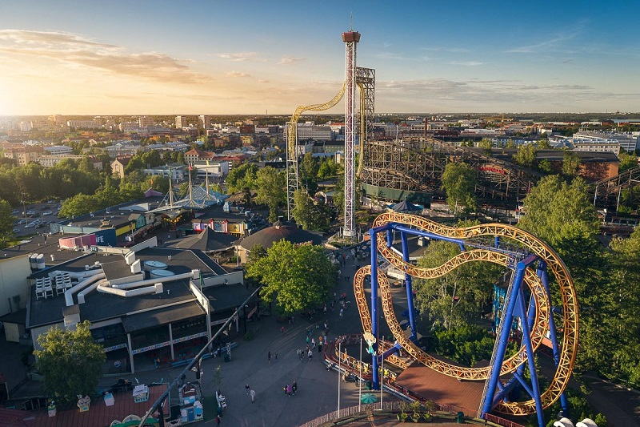

Linnanmäki
Linnanmäki on Helsingin keskustassa sijaitseva suosittu huvipuisto ja viihdekeskus. Se tarjoaa monipuolisia huvituksia, kuten huvipuistolaitteita, pelejä, esityksiä ja ravintoloita. Linnanmäki on perinteinen kohde sekä paikallisille asukkaille että matkailijoille, ja se tunnetaan iloisesta ilmapiiristään ja monipuolisesta viihteestään.
Reittiohjeet